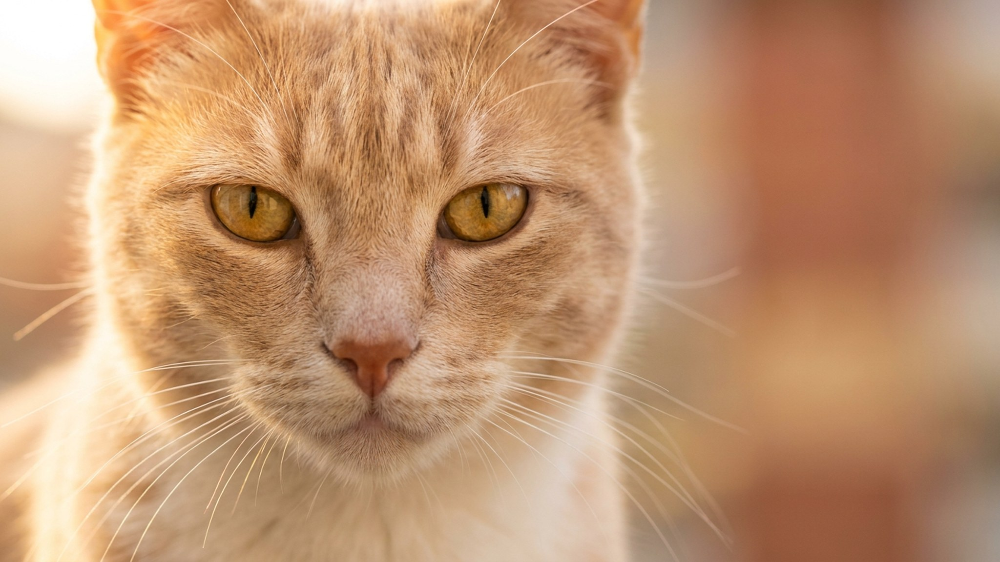

В начале XX века бульмастиф нёс ночные дозоры на английских охотничьих угодьях: задержать нарушителя бесшумно, без лишней агрессии. Эта история объясняет характер породы лучше любого стандарта. Бульмастиф — не кричащий пёс. Но если вы не дали ему ориентиры с первых месяцев, 50 кг спокойной самодостаточности превращаются в 50 кг собственного мнения.
🐾 Ваш питомец — бульмастиф?
Заведите профиль в AnimaLife: приложение запомнит породу, возраст и вес и будет подсказывать по уходу именно для неё. Вопросы AI-ветеринару — круглосуточно и бесплатно.
Завести профиль → Завести в MAX →
У вас iPhone? AnimaLife есть в App Store
Бульмастиф территориален и внимателен без постоянного тявканья. В семье — спокойный, привязанный, терпеливый с детьми. Не случайно породу называют «нянькой»: пёс держится рядом и следит, не делая из этого шоу. С незнакомыми людьми — сдержан, без паники и агрессии, если правильно социализирован.
Оборотная сторона: бульмастиф самостоятелен. Он обдумывает команды. Если смысла не видит — сделает по-своему. Это не злой умысел, а исторически отработанный способ работы: принимать решение на месте, не ждать приказа.
Бульмастиф плохо реагирует на давление и жёсткость. Силовые методы дают обратный результат: пёс закрывается или начинает сопротивляться. Работает позитивное подкрепление с чёткими и неизменными правилами.
Шерсть короткая — расчёска раз в неделю, линяет умеренно. Главное в уходе — другое.
Суставы бульмастифа формируются до 18–20 месяцев. До этого возраста — без длинных пробежек, лестниц, прыжков с высоты и интенсивного аджилити. Прогулки умеренные, на ровной поверхности. Это сбережёт суставы на годы вперёд.
Средняя продолжительность жизни породы — 8–10 лет. С возрастом стоит внимательнее следить за весом (лишний вес у молосса — дополнительная нагрузка на суставы и сердце) и активностью. Если пёс стал вставать медленнее, избегает лестниц или неохотно ложится — повод показать ветеринару, не ждать следующего осмотра.
🐾 У вас бульмастиф?
AnimaLife соберёт уход под породу: к каким болезням есть склонность, что проверять по возрасту, чем кормить и когда пора к врачу. Бесплатно, прямо в мессенджере.
Собрать план ухода → Собрать в MAX →
У вас iPhone? AnimaLife есть в App Store
🐾 Понравился разбор?
Подпишитесь на канал — каждый день разбираем по одному тревожному симптому у кошек и собак: что в пределах нормы, а когда пора к врачу. Подпишитесь, чтобы не пропустить разбор, который может спасти здоровье вашего питомца.
Материал носит информационный характер и не заменяет очную консультацию ветеринара.